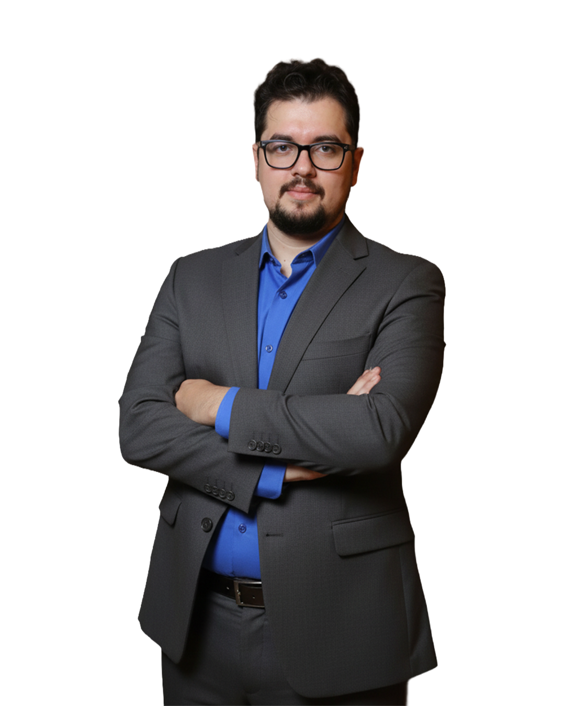

Dr. Mohsen & the anaesthesia teamد. محسن وفريق التخدير
Dr. Mohsen Mamdouhد. محسن ممدوح
Clinic lead · Anaesthesia & pain managementقائد العيادة · تخدير وعلاج ألم
From assessment before the procedure to recovery and pain follow-up, the team plans care around each case.من التقييم قبل الإجراء لحد الإفاقة ومتابعة الألم، الفريق بيحط خطة الرعاية حسب كل حالة.